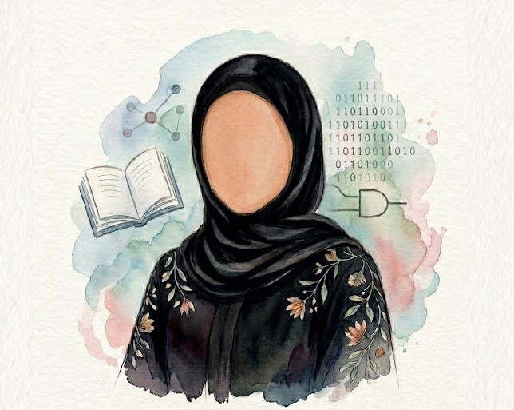

Personal Profile

Full Name: Raneem Alfraidi
Student ID: 441500506
Major: Computer Science
Favorite Quote
"Any fool can write code that a computer can understand. Good programmers write code that humans can understand."
- Martin Fowler
Learning Goals
In web development, my goal is to master front-end technologies to build intuitive, fully responsive, and accessible user interfaces. I want to deeply understand semantic structure and modern CSS layout modules to bring creative designs to life without relying on external frameworks.
Technical Skills
- Programming Languages: Java, C#, Python
- Web Development: Semantic HTML5 & CSS, JavaScript
- Core Computer Science: Deep understanding of Data Structures and OOP
CV
Education
B.S. in Computer Science
Recent Academic Projects
- StarTravel: Co-developed a dynamic web application utilizing HTML, CSS, and JavaScript, working within a team to integrate a MySQL database for backend data management.
- Interactive Storytelling: Collaborated on a comprehensive research and design study to adapt a classic fairytale into an engaging, choice-driven interactive user experience.
- Paint Studio: Partnered with peers to program a functional digital painting application using C#, demonstrating strong object-oriented programming and graphical interface design.
- Hotel Management System: Co-engineered a robust management system using Java and MySQL database. working collaboratively to efficiently handle and organize complex operational records.
My Interests
- Reading: I have a strong appreciation for both English and Arabic literature.
- Digital Organization: I enjoy exploring productivity systems and building structured digital workspaces to visually track my goals.
- Language & Culture: I have a strong intellectual curiosity for global cultures and languages.